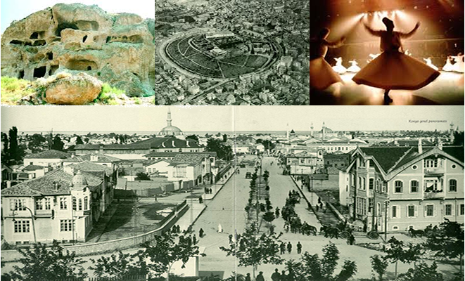

KONYA TARİHİ
Konya, Konya ilinin merkezi şehiridir. Trafik plaka numarası 42'dir. 1875'te kurulan Konya Belediyesi, 1984'te çıkarılan 3030 sayılı yasa gereğince "Büyükşehir" statüsüne kavuşmuş olup 1989'dan beri belediye hizmetleri bu statüye göre yürütülmektedir. Karatay, Meram, Selçuklu olmak üzere büyükşehir belediyesine bağlı 3 merkez ilçeden oluşmaktadır.
Ekonomik açıdan Türkiye'nin gelişmiş kentlerinden biri olan Konya doğal ve tarihsel zenginlikleriyle de önem taşır.Dünyanın en eski yerleşimlerinden biri olan Çatalhöyük UNESCO Dünya Miras Listesi'ne alınmıştır.Şehir Anadolu Selçukluları’nın veKaramanoğulları’nın başkentliğini yapmıştır. Türkiye'nin en önemli sanayi kentlerindendir.Anadolu Kaplanları'ndandır.Şehrin futbol takımı Konyaspordur.Konya’nın simgeleri arasında Mevlana Müzesi (Kubbe-i Hadrâ), çift başlı kartal, etliekmeksayılabilir.
Anadolu Selçukluları Devrinde Konya
Konya'nın 1071 Malazgirt savaşından sonra Selçuklu Türklerinin eline geçmesiyle (1076-1080) kurulan Anadolu Selçukluları Devletinin Başkentliği (1096-1277) döneminde Kültür ve Sanatta altın çağını yaşar. Devrin ünlü Bilginleri, Filozofları, Şairleri, Mutasavvıfları, Hoca, Musikişinas ve diğer sanatkarlarını bağrında toplamıştır. Bahaeddin Veled, Mevlâna Celaleddin başta olmak üzere Kadı Burhaneddin, Kadı Sıraceddin, Sadreddin Konevi, Şahabeddin Sühreverdi gibi bilginler, Muhyiddin Arabî gibi mutasavvıflar Konya’da yerleşmişler, verdikleri eserlerle şehri bir kültür merkezi haline getirmişlerdir.Bilhassa Hz. Mevlâna fikir ve felsefesi ile insanlığı aydınlatmış Mesnevi, Divan-ı Kebir gibi eserleri ile de bu etki halen devam etmektedir.
Yine Nasreddin Hoca da güldüren ve düşündüren fıkraları ile Konya’nın kültür ve sosyal hayatının gelişmesinde asırlardır devam eden bir bilge kişidir. Selçuklular dönemi Konyası’nda Kütüphaneler açılmış, bu dönemde Tarih, Edebiyat, Felsefe, Sanat, Tıp, Kozmoğrafya, Hukuk ve Din alanında büyük tarihi ve kültürel atılımlar yapılmış, buna bağlı olarak Medreseler, Camiiler, Kütüphaneler, türbeler, çeşmeler, kaleler, hanlar, hamamlar, çarşı ve bedestenler, köprüler, saraylar yapılmıştır.
Karamanoğulları Devrinde Konya
Konya da Karamanoğulları (1277) devrinde de bilim ve kültür alanındaki gelişmeler devam etmiş, Ulu Arif Çelebi ve oğulları Adil ve Alim Çelebiler ile Ahmet Eflâkî ve Sarı Yakup gibi bilgin ve Mutasavvıflar yetişmiştir.
Karamanoğulları Devri Tarihî ve Kültürel Eserler;
Ali Gav Zaviye ve Türbesi, Kadı Mürsel Zaviye ve Türbesi, Ebu İshak Kazeruni Zaviyesi, Hasbey Dar-ül Huffazı, Meram Hasbey Mescidi, Şeyh Osman Rûmi Türbesi, Ali Efendi Muallimhanesi, Nasuh Bey Dar-ül Huffaz, Turgutoğulları Türbesi, Kalenderhane Türbesi, Tursunoğlu Camii ve Türbesi, Burhaneddin Fakih Türbesi, Siyavuş Veli Türbesi,
Osmanlılar Devrinde Konya
Konya, 1467 yılında Osmanlı sınırlarındadır. Doğu seferlerine çıkan Osmanlı Sultanlarından Yavuz Sultan Selim, Kanunî Sultan Süleyman ve II.Murat'ın uğrak yeridir. İlim, kültür ve sanat hareketleri kesintisiz devam eder. Ünlü şairler, bilginler, tarihci ve filozofların toplandığı merkez halindedir. Bu dönemde de mimarî yönden; Camiiler, Çeşmeler, Medreseler v.s eserler meydana getirilir.
Osmanlı Devri Tarihî ve Kültürel Eserleri
Selimiye Camii, Yusufağa Kitaplığı, Piri Mehmet Paşa Camii, Şerafettin Camii, Kapu Camii, Hacı Fettah Camii, Nakiboğlu ve Aziziye Camiileri, Şeyh Halili Türbesi ile Mevlâna Külliyesi dönemin mimarî eserlerinden bazılarıdır.
Osmanlının son döneminde Tanzimat hareketiyle Konya'da da yenileşmeler başlamış Medreselerin yanında İlkokullar (İptidai), Öğretmen Okulu (Darülmualimin) ve Ortaokul (Rüştiye) açılmıştır. İlk Lise (idadi) 1889 yılında, yine aynı yıllarda Konya Sanat Okulu da Vali Ferit Paşa tarafından hizmete açılmıştır. 1900 yılında Konya'daki medrese sayısı ilçeler dahil 530'a ulaşmıştır.
Cumhuriyet Devrinde Konya tarihi
29 Ekim 1923 yılında Cumhuriyetin ilanı ile eskilere ilave yeni okullar açılarak, yeni gazete ve dergiler yayınlanmaya başlanır. Yurt genelinde olduğu gibi Konya'da da İlk, orta, Lise ve Yüksek Öğretim devlet yönetimine geçer, okul yapma ve okuma seferberliğine başlanılarak öğretmen yetiştiren okullar ile teknik ve sanat okulları, yüksek okullar memleketin ihtiyacına göre yenilenerek çoğaltılmıştır.
Kültür Bakanlığının kurulması ile kütüphaneler ve müzeler, Kültür ve Tabiat Varlıklarımızın korunması 2863 ve değişik 3386 Sayılı " Kültür ve Tabiat Varlıklarını Koruma Kurumu " çerçevesinde Kültür Bakanlığının denetimine verilmiştir. Tüm illerde Bakanlığı temsil edecek İl Kültür Müdürlükleri teşkilatlandırılarak Cumhuriyet dönemi kültür ve sanat hareketleri sistematik hale getirilmiştir.
Konya’da günümüze gelebilen tarihi eserlerin başlıcaları
Hitit Şehri:
Konya’ya 7 km uzaklıkta Karahöyük’te çıkarılmıştır. Mimarî kalıntılar, mühürler, çanak ve çömlekler bulunmuştur.
Çatal Höyük:
Konya’dan 50 km mesafede olup, Anadolu’da insanlığın bilinen ilk yerleşme merkezlerinden biridir.
Çatalhöyük (Çatalhüyük): Çumra’ya 12 km uzaklıktadır. Evler, renkli resimler, seramik ve mezarlar bulunmuştur.
İvriz Kaya Anıtı:
Tarihin ilk tarım anıtı olup, Hitit devrinden kalma bir kabartma taştır. Ereğli ilçesindedir. Hititler toprağın bereketine şükür ifadesi olarak dikmişlerdir.
Nane ve Dede Höyükleri:
Ilgın’ın 25 km kuzeydoğusunda Hitit devrinde III. Hattuşil’nin oğlu Tatalya “Salburt” isimli bir şehir kurmuştur. Bu şehir ile ilgili eserlerden öğrenildiği kadarıyla Hititler “Hiyeroğlif” yazıyı Mısırlılardan 500 sene önce M.Ö. 3500’de kullanmışlardır.
Hitit Çeşmesi Anıtı:
(Eflatunpınar), M.Ö. 1300-1200 yıllarından kalmadır. Beyşehir’e 15 km mesafededir. 14 taştan yapılmış olup, duvar şeklindedir. Belviranköyünde tarihi kalıntılar, Hadim’de Bolat ve Eserler köylerinde önemli Hitit eserleri vardır.
Ak Manastır:
Konya-Silifke yolu üzerinde, kayaya oyulmuş bir manastırdır. 274 senesinde Saint Horion adına yapılmıştır.
Haghia Kilisesi:
Sille’de 327 senesinde yapılmış olup, Anadolu’daki en eski kiliselerden biridir. Bizans Çağı Kalıntıları: Cihanbeyli Akçaşar köyünde tarihi kalıntılardır.
Çatalhöyük, Beyşehir Erbaba Höyüğü, Beyşehir Eflâtunpınar Anıtı, Fasıllar Anıtı, Ereğli İvriz Kaya Kabartması, Beyşehir Kalesi,Akmanastır (274), Hagia Eleni Kilisesi (327), Sahip Ata Külliyesi (1283), Alaaddin Camisi, Selimiye Camisi (1565), Aziziye Camisi (1676), İnce Minareli Medrese, Sırçalı Medrese , Taş Mescit (1215), Sırçalı Mescid (XIII.yüzyıl), Tahir ile Zühre Mescidi, Beyhekim Mescidi (XIII. Yüzyıl) Mevlâna Türbesi ve Dergâhı, Beşare Bey (Ferhuniye) Mescidi (1219), Erdem Şah Mescidi (1230), Hoca Hasan Mescidi (XIII.Yüzyıl) Gömeç Hatun Türbesi, Hasbey Darül Hüffazı (1421), Karatay Medresesi, Sadreddin Konevi Cami ve Türbesi (XIII.yüzyıl), İplikçi Camisi ve Medresesi (XII.yüzyıl), Dursunoğlu Camisi (XV.yüzyıl), Kapı Camisi (İhyaiyye Camisi) (XV.yüzyıl), Karatay Mescidi (XIII.Yüzyıl), Nasuh Bey Darülhüffazı (XV.yüzyıl), Al Gav Medresesi (XII.-XIII.yüzyıl), Tacül Vezir Medresesi ve Türbesi (XIII.yüzyıl), Beyşehir Eşrefoğlu Camisi (1162), Ereğli Ulu Camisi (XIII.yüzyıl), Karapınar II.Selim Külliyesi (XVI.yüzyıl), Beyşehir Demirli Mescid (XII.yüzyıl), Ahmet Efendi Hamamı (XV.yüzyıl), Mahkeme Hamamı (XV.yüzyıl), Kapı Çeşmesi (XIII.yüzyıl), Nakipoğlu Çeşmesi (XV.yüzyıl), Yusufağa Kütüphanesi (XIII.yüzyıl), Kadı Mürsel Zaviye ve Türbesi, Ebu İshak Kazeruni Zaviyesi, Kalenderhane Türbesi, Tursunoğlu Cami ve Türbesi, Burhaneddin Fakih Türbesi, Siyavuş Veli Türbesi, Meram Hasbey Mescidi, Şeyh Osman Rûmi Türbesi, Ali Efendi Muallimhanesi, Piri Mehmet Paşa Cami, Şerafettin Cami, Hacı Fettah Cami, Nakiboğlu ve Aziziye Camileri, Şeyh Halili Türbesi, Kızılviran Hanı (1205), Horozlu Han (1246-1249), Kadınhan, Akşehir Ulu Camisi (1213), Güdük Minare Mescidi (1226), Seyyid Mahmud Hayrani Zaviyesi (1224)’dir.Ayrıca Atatürk’ün ilk heykellerinden birisi (1926) Konya’dadır. Türk sivil mimari örneklerinden evler bulunmaktadır.
Önemli bir turizm merkezi olan Konya’da Aralık ayının ilk Pazar gününden 17 Aralıka kadar devâm eden Mevlânâ Haftası; 5 Temmuzda başlayıp bir hafta devam eden Akşehir Nasreddin Hoca şenlikleri; 25-30 Ekim arasında yapılan Âşıklar Bayramı; 9 Eylülde yapılan Cirit Yarışmaları ve 1971’den bu yana 5 Ağustosta başlayıp bir ay devâm eden Konya Fuarı ile ilimiz, kültür şehri vasfını teyid etmektedir.
Konya ve milli kültürümüzün manevi mimarları, Mevlana Celaleddin Rumi; insan sevgisi, dünya görüşü ve hayat felsefesi ile dünyaya ışık tutarken; Nasreddin Hocamız, Türk Milleti'nin hazır cevaplılığını ve kıvrak zekasını nükteleriyle dile getirmiştir.